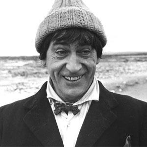

| The First Doctor |
| The Second Doctor |
| The Fourth Doctor |
| The Fifth Doctor |
| The Sixth Doctor |
| The Seventh Doctor |
| The Eighth Doctor |
| The Ninth Doctor |
| The Tenth Doctor |
| The Eleventh Doctor |
| The Twelfth Doctor |
Second Doctor
Portrayed by Patrick Troughton.
Within the series' narrative, the Doctor is a centuries-old Time Lord alien from the planet Gallifrey who travels in time and space in his TARDIS, frequently with companions. When the Doctor is critically injured, he can regenerate his body; in doing so, his physical appearance and personality change.
The transformation into the Second Doctor (originally referred to as a "renewal"), a figure who was the same 'essential' character as the first but with a very different persona, was a turning point in the evolution of the series, and eventually became a critical element of the series' longevity.
The First Doctor grew progressively weaker while battling the Cybermen during the events of The Tenth Planet and eventually collapsed, seemingly from old age. His body renewed itself and transformed into the Second Doctor.
Initially, the relationship between the Second Doctor and his predecessor was unclear. In his first story, the Second Doctor referred to his predecessor in the third person as if he were a completely different person. His companions Ben and Polly are at first unsure how to treat him and it is only when a Dalek recognises him that they accept that he's the Doctor.
In the second story, The Highlanders, Jamie McCrimmon joined the TARDIS crew, and remained with the Second Doctor for the rest of his travels. Ben and Polly left together when the TARDIS landed at Gatwick Airport on the same day they originally left with the First Doctor, after they had stopped the mass kidnapping of tourists by shape shifting aliens. The Doctor and Jamie then became involved in a plot by the Daleks to gain both the "Human and Dalek Factors" when the TARDIS was stolen, which led to them meeting Victoria Waterfield in the 19th century. The Doctor used the situation to engineer a Dalek civil war that seemingly destroyed the Daleks forever. However, Victoria's father was among the casualties. Now an orphan, Victoria chose to accompany the Doctor and Jamie on their travels. Although she felt great affection for the Doctor and Jamie, she was never able to completely come to terms with life in the TARDIS and the constant danger that resulted. She eventually chose to leave after the events of Fury from the Deep and was adopted by someone in the 20th Century. The Doctor was then joined by Zoe Heriot, an extremely intelligent (if overly dependent on logic) woman from the 21st century, who helped defeat the Cybermen attack on a space station known as the Wheel. She then stowed away in the TARDIS and, despite the Doctor's warnings about what she might encounter, chose to remain.